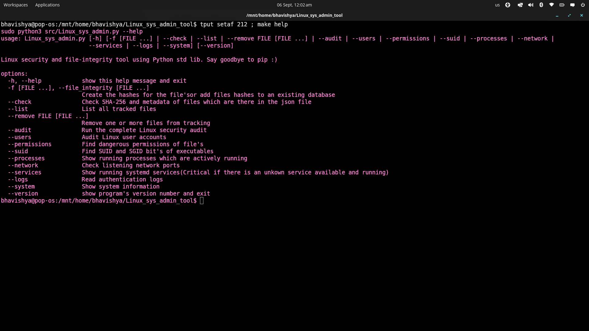

Replaced 12 Third-Party Packages with Python Stdlib
1. What I Built by Hand
I made a standalone Linux administration and security auditing tool called Linux_sys_admin.py. Attacks on Linux servers are so common nowadays and privilege escalation (LPE) is a constant headache. Admins usually end up running dozens of separate commands or writing messy bash scripts just to inspect the kernel state. My script brings security checking user audits current process inspection and file tracking into one place with zero external dependencies
The script requires root permissions so it can safely read system-level files and kernel vfs(/proc). It checks things like duplicate accounts with UID 0 world-writable files(perm:777) SUID and SGID binaries and listening sockets(TCP/UDP).

2. Zero-Dep Verification Proofs
I have also made a python file for checking third-party packages in a python script and spotting it out :
First is verify_stdlib.py. It uses Python's own AST engine to parse every single import statement in the source code and validates each module against sys.stdlib_module_names. If a third-party module secretly get's imported in the test shows an error.
Second is deps-proof.txt which records the clean environment footprint.
3. What Packages I Would Normally Reach For
If this were an everyday project without zero-dependency constraints I would have immediately reached for:
psutil • watchdog • click • rich • colorama • tabulate • sdbus • systemd-python • pyyaml • filelock • xxhash • argcomplete
4. What It Actually Took to Replace Them
Swapping out those packages meant writing the underlying logic by hand. Here is the full breakdown of decisions and tradeoffs:
| Package | Standard Library Used | Why and How |
|---|---|---|
click |
argparse |
Flag parsing subcommand dispatch and auto-generated help screens are already built into argparse. So replacing it with click was not a big deal for me. |
psutil (processes) |
os.listdir("/proc") |
The Linux kernel exposes live process information as virtual text files. Reading status and cmdline directly helps us to skip psutil library. |
psutil (network) |
Manual parse of /proc/net/* |
Listening ports and socket states are stored in /proc/net/tcp and udp. I wrote hex address conversion logic to extract them directly. |
rich / colorama |
Raw ANSI escape sequences | Color codes like \033[91m are standard terminal escapes. I used them(writing the ANSI escape codes where a big headache for real). |
watchdog |
hashlib.sha256 + polling |
Finding a stdlib substitute for watchdog took hours. Watchdog watches files in real time through inotify so I switched to point-in-time checks hashing files whenever the user asks. |
xxhash |
hashlib.sha256 |
xxhash is fast but non-cryptographic. For system security and file modification tracking a cryptographic hash matters much more.To be honest this was my first smart choice of stdlib instead of the third-part library |
sdbus / systemd-python |
subprocess.run(["systemctl", ...]) |
Direct D-Bus bindings need C extensions. Calling the native systemctl binary already on the machine gives the same active service list. |
tabulate |
Manual f-string formatting | Fixed-width output like f"{name:<20}{uid:<8}" handles clean terminal columns without an extra formatting package. |
pyyaml / toml |
json |
hashes.json stores the file metadata database.Toml was also a good choice though I would have used that instead. |
filelock |
os.replace() atomic swap |
Instead of file locking I write data to a temporary file first and swap it into place with os.replace() which is an atomic operation on Linux. |
pwd helpers |
pwd & grp |
UID-to-username and GID-to-group lookups are native standard library modules on POSIX systems. |
argcomplete |
bash_tab_complete.bash |
Instead of a Python package I wrote a standalone bash completion function using the shell's builtin complete command.This script was completely optional though so I won't include that in my main stdlib replace count. |
Replacing Filelock and Watchdog in Code
Here is the chunk from my script showing chunk-based SHA-256 calculation and JSON writes:
import hashlib
import json
import os
def calculate_hash(filepath):
"""Calculates SHA-256 in 4096-byte binary chunks with pure hashlib"""
sha256 = hashlib.sha256()
try:
with open(filepath, "rb") as f:
while chunk := f.read(4096):
sha256.update(chunk)
return sha256.hexdigest()
except (PermissionError, FileNotFoundError):
return None
def save_hashes_atomically(data, target="hashes.json"):
"""Atomic write pattern replacing cross-process filelock dependencies"""
temp_file = f"{target}.tmp"
with open(temp_file, "w") as f:
json.dump(data, f, indent=2)
os.replace(temp_file, target)5. The 13 Security Commands Built In
Here is what each flag in the main script actually executes when run against a live system:
6. Other Projects & Work
Apart from this zero-dependency hackathon tool here are some of my other open-source projects built for Linux environments and Android security:
You can check out the rest of my repos directly on my GitHub: github.com/Bhavishyaa12